Welcome to Gifford High School, a premier government boys-only institution located in the heart of Bulawayo. Established in 1927 as the Bulawayo Technical School by our founding headmaster, Mr. Philip Henry Gifford, our school has spent nearly a century "arising" from humble beginnings to become a cornerstone of academic and sporting excellence in Zimbabwe.
At Gifford, we believe that education is about more than just the classroom; it is about building the "Giffordian" spirit. We pride ourselves on a rich tradition that balances a strong technical heritage with a modern, comprehensive curriculum. Our mission is to nurture young men who are not only academically capable but are also disciplined, courageous, and ready to lead in a rapidly changing world.
From the historic Beit Hall to our expansive sporting fields like Sutherby Field, our campus provides the perfect environment for holistic growth. Whether in the science lab, on the rugby pitch, or in the technical workshop, we empower our students to live out our motto every day: to arise from their beginnings and reach their full potential.
Key Highlights
Heritage: A historic institution with nearly 100 years of excellence in Bulawayo.
Technical Excellence: A unique heritage in technical subjects like Wood & Metal Technology and Technical Graphics.
Sporting Prowess: A proud history of rivalry and success in rugby, cricket, and athletics.
Holistic Development: A diverse curriculum offering Sciences, Arts, and Commercials alongside ICT and life skills.
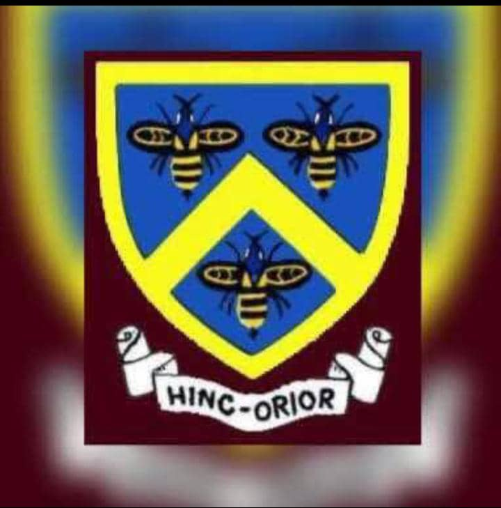
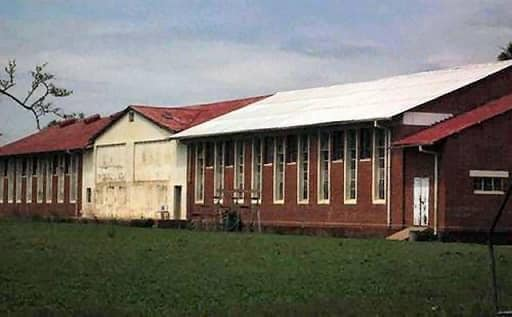
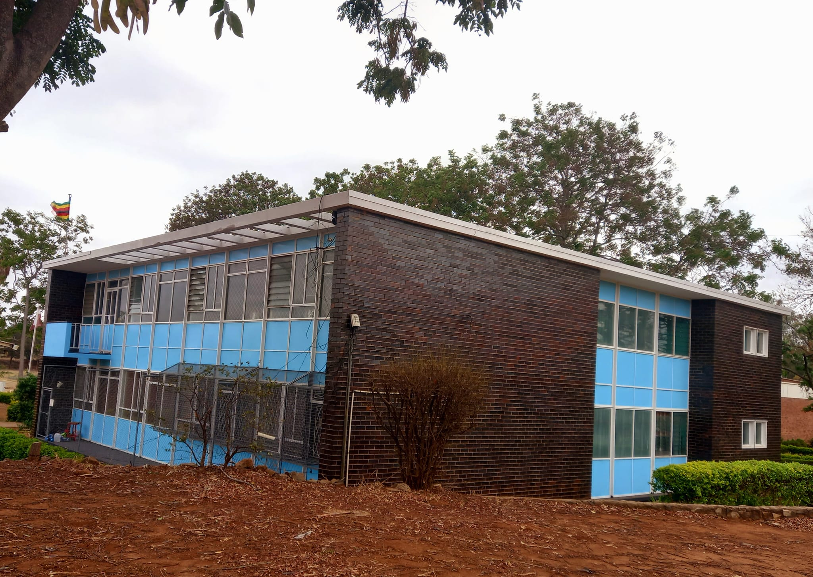
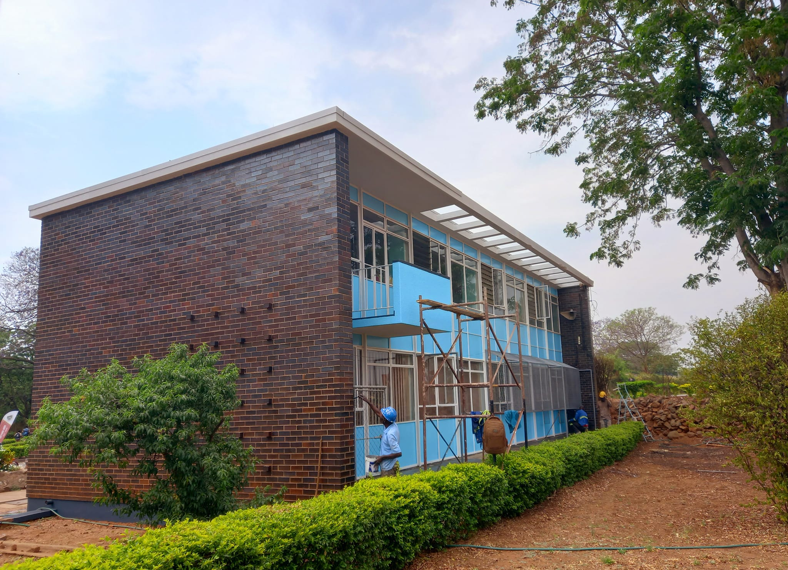
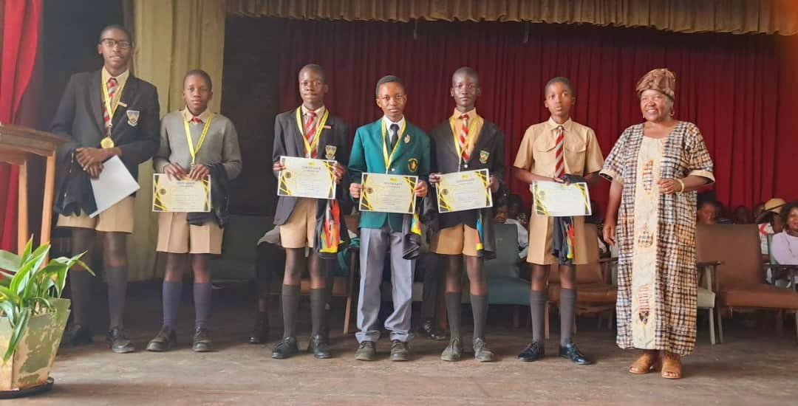
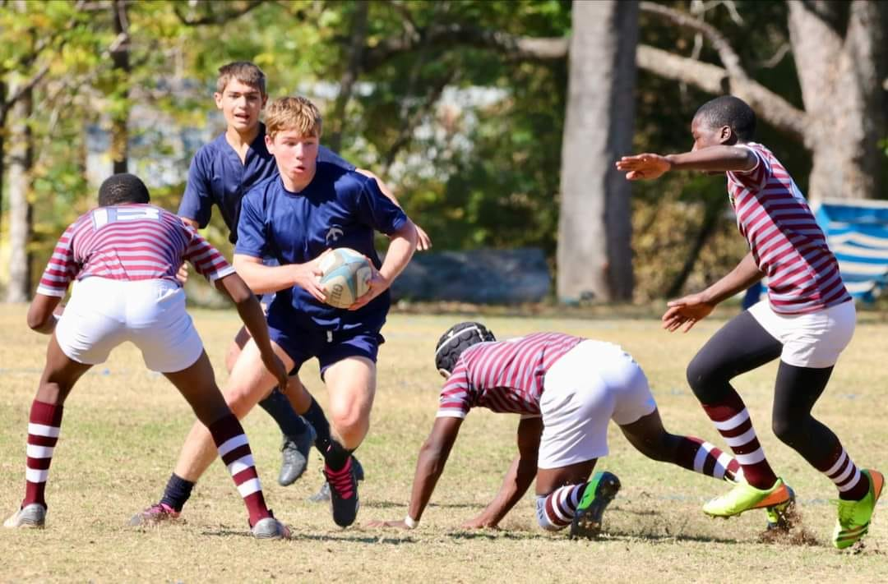
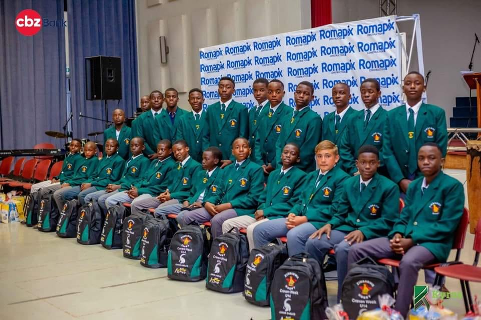
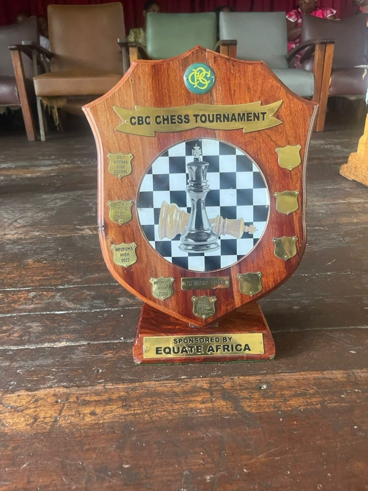
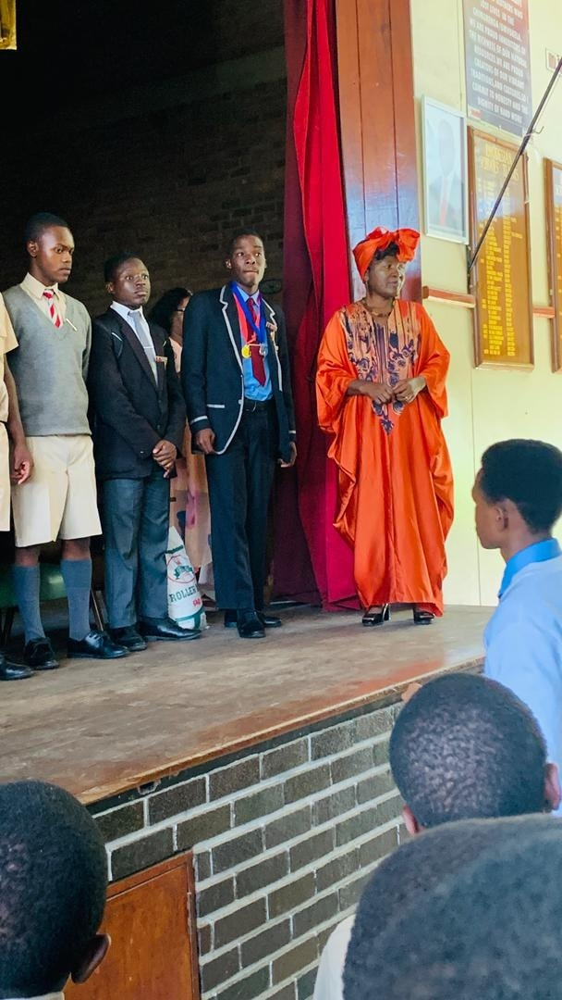
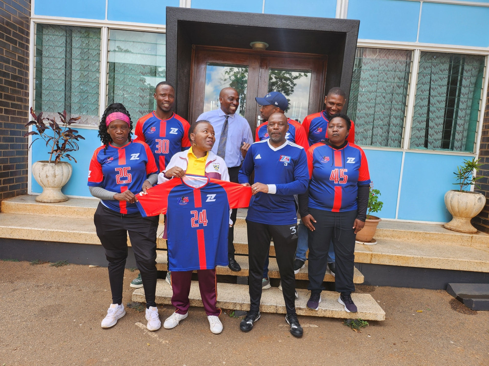
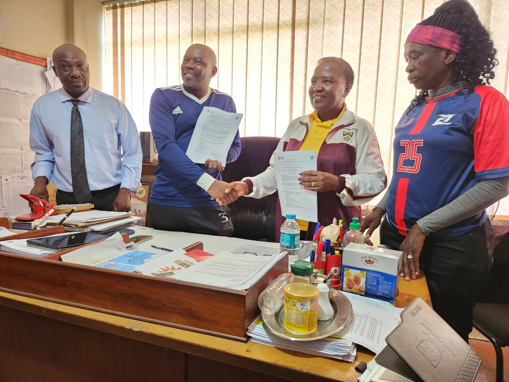
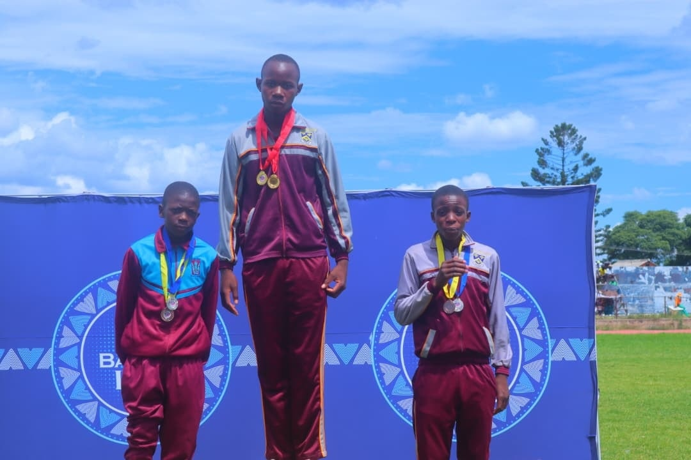
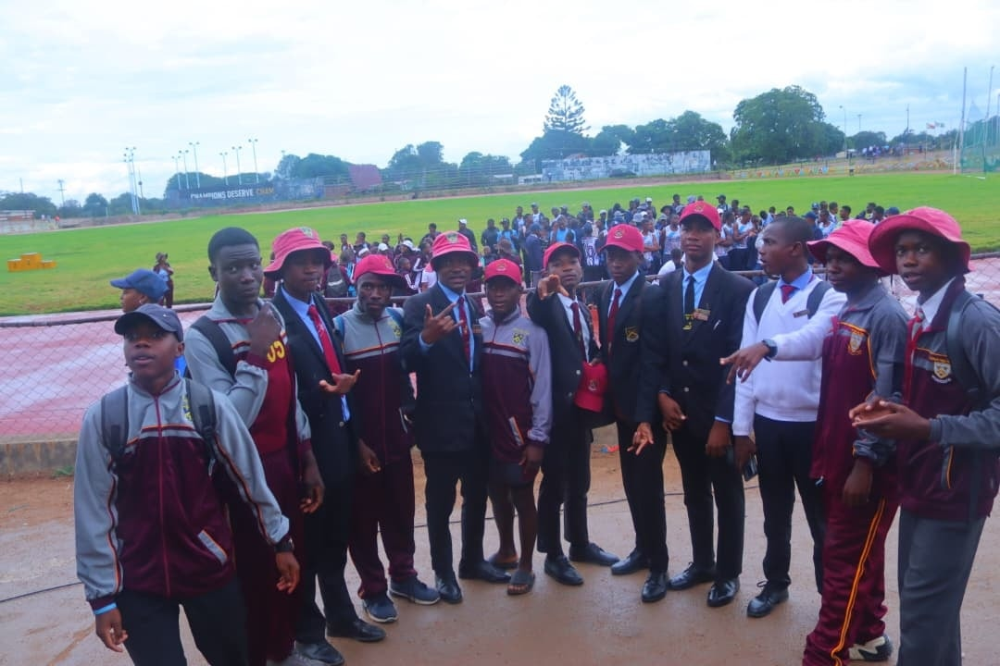
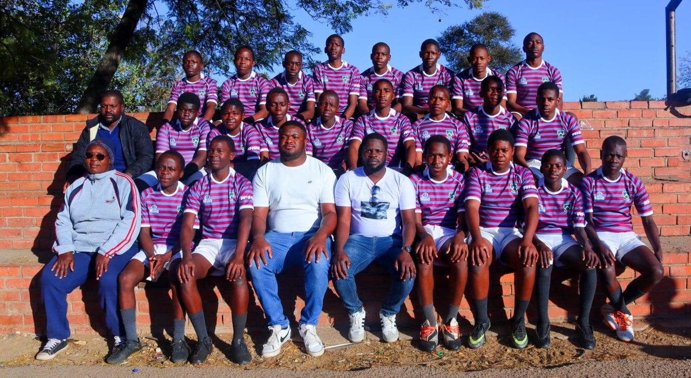
About the School
Full School History
Founding (1927): Gifford was established in January 1927 as the Bulawayo Technical School, the first of its kind in the country. It began with just 39 pupils and four teachers under the leadership of the founding headmaster, Mr. Philip Henry Gifford.
The Early Years: The school originally operated from rented premises (St. George's Buildings) and the old Bulawayo Polytechnic site before moving to its current permanent home on Matopos Road in the 1950s.
Renaming: On August 19, 1961, the school was renamed Gifford Technical High School to honor its founder. In 1974, it became a comprehensive high school, adopting its current name, Gifford High School, while still maintaining its prestigious technical heritage.
Legacy: For nearly a century, Gifford has been a powerhouse in Bulawayo, known for producing "Giffordians"—young men defined by resilience and the "Hinc Orior" spirit.
Academics
Curriculum Details
Gifford High School offers a comprehensive and diversified curriculum registered under ZIMSEC (and historically aligned with Cambridge/AEB standards). We provide a three-tier educational path:
Junior Level (Form 1–2): A broad foundation in Sciences, Humanities, and Technical Arts.
O-Level (Form 3–4): Specialization into Science, Commercial, or Technical streams.
A-Level (Form 5–6): Advanced study preparing students for university and professional technical colleges.
Technical & Vocational (Our Heritage): Wood Technology, Metal Technology, Technical Graphics, Building Technology, Agriculture, ICT/Computer Science.
Commercials: Principles of Accounts, Business Studies, Economics.
Humanities & Arts: English Language & Literature, Ndebele, History, Heritage Studies, Family & Religious Studies (FRS).
Departments To ensure specialized attention, our academic wing is divided into several departments:
Department of Technical Arts: (The heart of Gifford's history).
Department of Sciences & Mathematics.
Department of Languages & Humanities.
Department of Commercials.
Department of ICT & E-Learning.
Admissions
At Gifford High School, we welcome young men who are eager to uphold the "Giffordian" spirit of excellence and resilience. Our admission process is designed to identify students who will thrive in our balanced academic and technical environment.
Admission Requirements To apply for a place at Gifford High, parents/guardians must provide the following documentation:
Identification: Certified copy of the student's Birth Certificate and a copy of the parent/guardian's National ID.
Academic Records:
For Form 1: Grade 7 Results Slip and the most recent Primary School report.
For Form 2 – 4: Latest school report and a Transfer Letter (ED12) from the previous school.
For Lower 6: ZIMSEC O-Level results (minimum requirements apply based on chosen subjects).
Proof of Residence: A recent utility bill (water/electricity) to verify the catchment area (if applicable).
Passport Photos: Two recent passport-sized photographs of the student.
Important Dates (2026 Cycle)
Lower 6 Enrollment: Applications open immediately following the release of ZIMSEC O-Level results (typically January/February).
School Tours: Held by appointment during the final term of each year.
Orientation Day: Conducted a week before the first term begins for all new Form 1 students.
Annual General meetings
Zimsec Registration dates
Staff & Leadership
Principal's Message
"Welcome to Gifford High School. As we look toward our centenary, our mission remains as clear as it was in 1927: to provide a 'Hinc Orior' foundation for every young man who walks through our gates. We don't just teach subjects; we build character, resilience, and technical expertise. At Gifford, we pride ourselves on being a 'school of choice' for those seeking a balanced, holistic education. I invite you to explore our website and join us in our journey of arising to new heights." — Mrs. B. Dewa, Headmaster.
List of Teachers & Staff
School Head: Mrs. B. Dewa
Deputy Head: Mr. C.O Ndhlovu
SDA Chairman: [Insert Name] (Note: The School Development Association is a key leadership body at Gifford).
Senior Staff: Organize by Department (e.g., HOD Technical Arts, HOD Sciences, HOD Humanities).
Students & School Life
Extracurricular Activities Gifford is legendary for its vibrant student life. We encourage every Giffordian to find his passion outside the classroom.
Cultural: Drama Society, Public Speaking, Quiz Club, and the renowned School Choir.